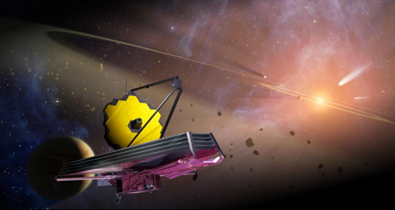

Photonic ring resonator filters for astronomical OH emission lines suppression
Australian Astronomical Optics (AAO)*, Department of Industry, Innovation and Science / Macquarie University, Sydney, Australia
In collaboration with Argonne National Laboratory (ANL)
Summer School 2017. Duration: 2 months
*The AAO is a world leader in the development of innovative technologies and instruments to provide world-class observing facilities for astronomical surveys of the night skies. The early use of optical fibres set the organisation apart in the 1980s when multi–fibre spectroscopy was transformed from an interesting novelty into a highly productive technique. In the late 1990s, when the potential of this technique was demonstrated, allowing the capture of 400 spectra at once, this was an unprecedented development and the scientific surveys that followed provided the worldwide community with some of its richest data (https://www.aao.gov.au/).
Observing in the near–infrared is beneficial for many areas of astronomy but also is very challenging due to extremely bright and variable emission from the Earth's atmosphere. Most of the atmospheric emission is in the form of narrow emission lines, resulted from the de–excitation of atmospheric OH radicals, produced in the reaction of hydrogen with ozone at an altitude of ~ 90 km.
|

Solving the difficulty of the NIR night sky background is a long standing problem.
Several solutions to this problem have been proposed.
One of them is James Webb Space Telescope which was launched into orbit above the atmosphere in 2018 at a cost of US$ 8.8 billion.
However, space installations have a finite lifetime and are expensive to replace
whereas ground–based facilities can take advantage of developments in technology and allow for the optimization of instruments.
Astronomical instruments typically comprise 1) bulk optics (lenses, mirrors, diffraction gratings, filters), 2) photonic elements (optical fibres and waveguides), 3) mechatronics (fibre positioning robots and alignment mechanisms) and 4) detectors (charge coupling devices and infrared arrays). The system is used to extract the information from the light and subsequently collect the data in the form of images and spectra from astronomical sources. |
Since OH emission lines are smeared by the spectrograph scattering point spread function, contaminating the inter–line region, it is not possible simply to observe the spectrum at high resolution and is necessary to suppress OH emission lines before light enters the spectrograph. The problem requires very complex filters with many aperiodic and narrow notches, high level of suppression, high overall throughput and wide wavelength coverage.
Several ground–based solutions have been proposed. These include high–dispersion masking, ultra–narrow band filters, Rugate filters and holographic filters. All of these have met with limited success, either due to the spectrograph scattering problem, difficulties in fabrication or difficulties in implementation.
Photonic technology is capable of meeting this challenge. The use of Fibre Bragg Gratings (FBGs) has been shown to produce OH– suppressed spectra. Such devices have been proven on–sky with the GNOSIS prototype instrument developed in 2012, the first astronomical instrument to use FBGs and photonic lanterns. Even so, the cost of scaling GNOSIS–type instruments to larger field of view remains the chief limitation and is currently prohibitive.
The recent solution based on microring–resonators is capable of providing an on–chip solution. Ring resonators have been developed for applications in telecommunications, industry, and photonics research as filters, add/drop multiplexers, delay lines, modulators, sensors, laser generators, tunable dispersion compensators, wavelength converters, frequency calibration combs and tunable cross–connects.
The motivation to explore their use for OH suppression is primarily due to their efficient method of manufacture. Ring resonators can be lithographically printed in a photonic integrated circuit (PIC), and are, therefore, very versatile and repeatable. They are highly modular and can be easily combined with other photonic components, e.g. array–waveguide gratings, to form fully photonic systems, potentially offering a much more scalable means of production than is possible using FBGs.
Ring resonators capture and filter light, selectively removing atmospheric OH emission lines from the signal and effectively making the sky dark. These filters have a characteristic set of frequencies at which it is possible to confine light waves and provide a means of filtering specific wavelengths from a waveguide. At these frequencies energy can be efficiently stored for lengths of time characterized by the resonator Q factor, roughly the storage time in cycles of oscillation. In the last decade there has been a remarkable progress in boosting this storage time. Efficient OH lines suppression requires high resolution Q factors, strong suppression depth and sufficient total throughput.
Deep scaling of photonics has led to smaller building blocks, higher integration density and, therefore, more functions on a chip. Ring resonators are inherently very small devices (1–100 µm), providing a great means of miniaturizing parts of instruments. From Low and Medium Contrast materials (SiO2 or polymer based with Bend Radius ~ 5 mm; InP–InGaAsP with Bend Radius ~ 500µm) to Ultra–high Contrast materials (silicon on insulator based with Bend Radius < 5µm), photonics is going through the same evolution as Si electronics (from transistor radio in 1954 to Pentium® 4 Processor in 2002). Rings with small bending radii (< 10 µm) are required to provide an adequate free spectral range, leading to high refractive index contrast materials, such as Si and Si3N4.
In this research the design requirements of applying ring resonators to OH suppression are derived from signal/background simulation and their theoretical properties. An algorithm of estimating the measurement experimental error of filter depth is developed for different size laser beams. The early laboratory tests of Si and Si3N4 devices show good control over the free spectral range, sufficiently high resolution factors (Q > 5000) and suppression depths (D > 15 dB), and the total throughput > 50 %, making the sky ~ 4 magnitude fainter with huge potential gains in signal to noise.